Июнь 2010
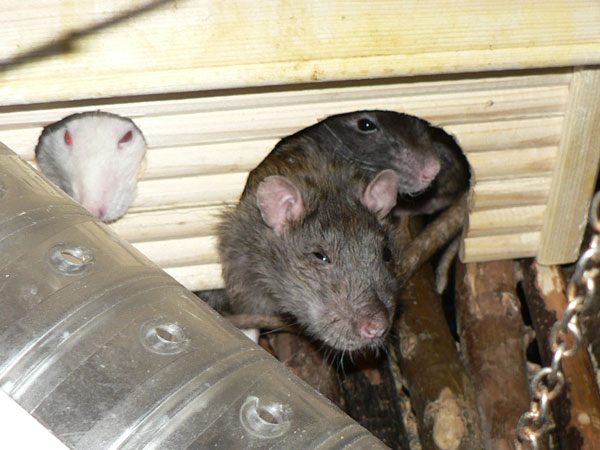
Тесно обитаемый домик: дон Рэба, за ним — Сентябрь, в окне — Сосискин.

Дон Румата и дон Рэба на кровати. Дырка была раньше :-)

Жорик не хочет вылезать из домика даже во время уборки.
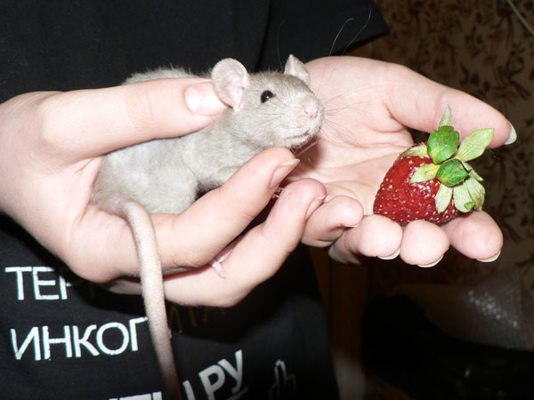
Свежеприбывший Циклон Б.

Такой стеснительный поначалу…

Иннокентий Пасюкович.
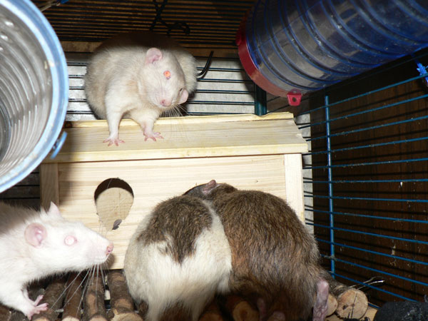
Циклончик в доме, Благородные доны лезут в дверь, им на подмогу спешит Сосискин, а Жоффруа чесать на все это хотел.
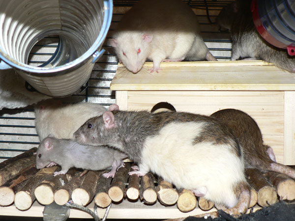
Циклон выскочил через окно, и всем интересно его обнюхать.

Циклон удирает в переходную трубу, Сосискин внизу ничего не подозревает. Справа — дон Рэба.
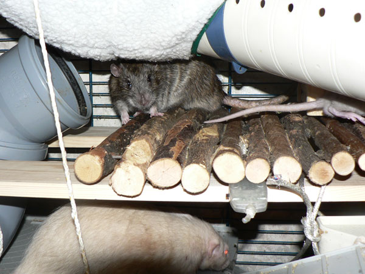
Кеша: — Куда этот мелкий делся?
Жорик: — Ищу…

Дор Румата: — Ага, нашел!
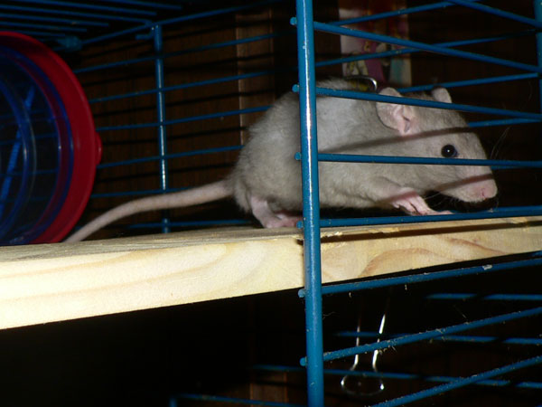
Циклон Б: — Загнали на самый верх, тут у них целое гнездо!

Дон Румата подмигивает, сзади — дон Рэба.
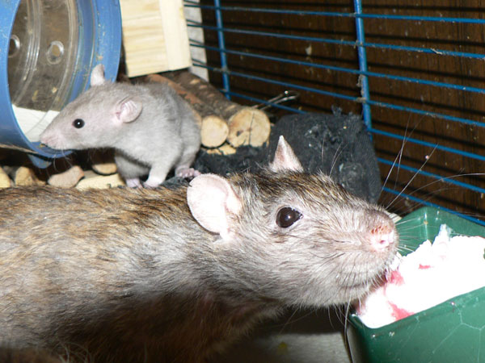
Иннокентий аккуратно ест, не обращая внимания на новенького Циклона Б.

Циклончик исследует новую клетку.
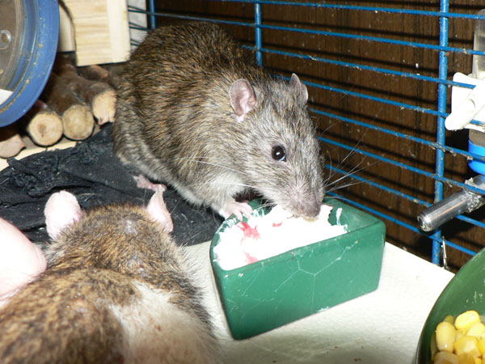
Кеша и немного дона Руматы.

Циклон Б: — А что это вы тут делаете?
Дон Рэба: —
Жоффруа тори массаж мне делает, не видишь, что ли. Спина болит, не молод
уже.
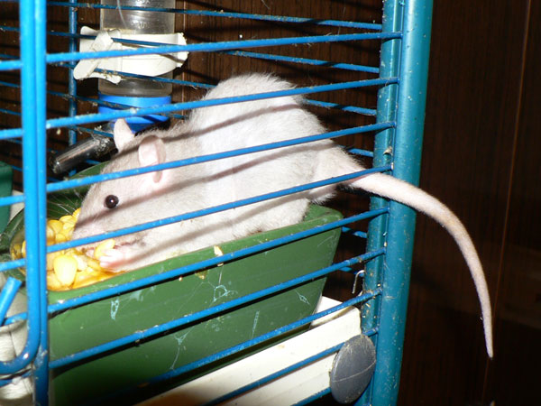
— А если сидеть в миске, то больше достанется!

Почти весь домик занял Жорик, но дон Рэба сумел влезть сверху.
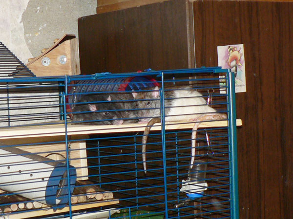
Дон Румата и Сентябрь синхронно помахивают хвостами.

Иннокентий медитирует.
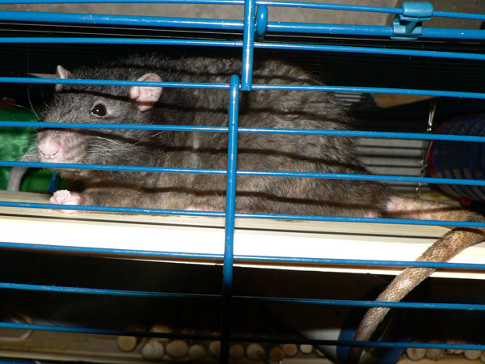
Сентябрь Первый-Подкрылечный в философском настроении.

Тут была дырка, прогрызенная трудолюбивым пасюком.
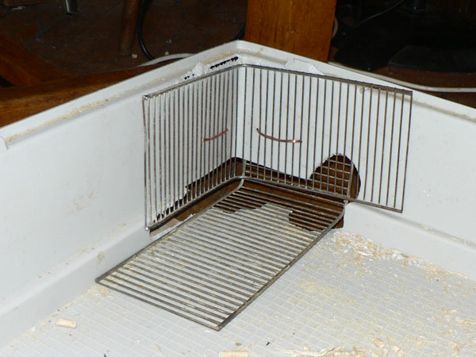
Потом она расширилась, пришлось закрывать железяками. Сейчас думаем заказать на заводе бронированный поддон.

Второй новенький — Терабайт, сын дона Руматы.
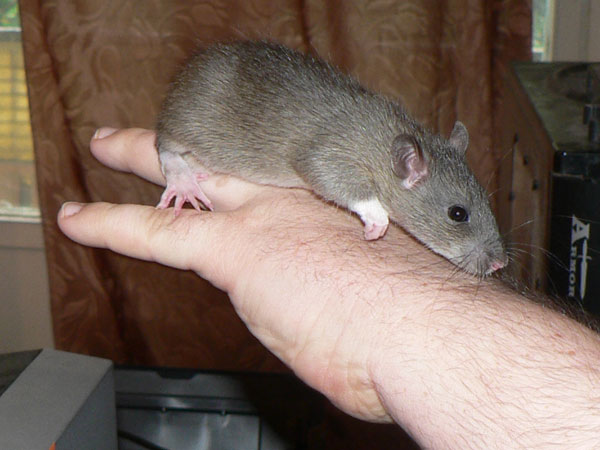
В первое время они все такое осторо-о-ожные…

Терабайт на мониторе.
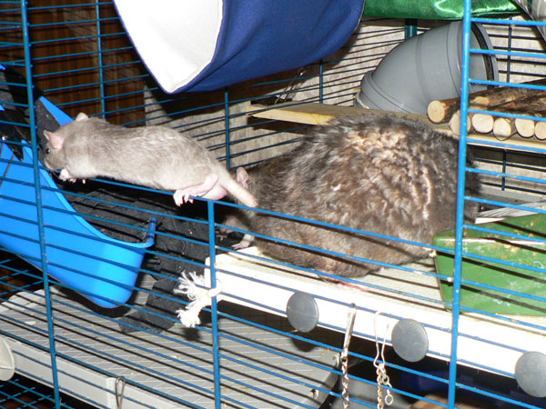
Циклончик все еще носится по клетке, а Сеня свернулся спать.

…и Терабайт носится вприпрыжку.
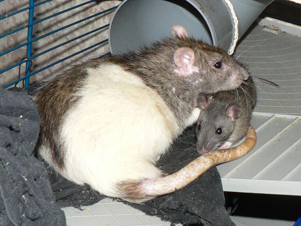
Дон Румата и его сын Терабайт. Мило получилось.